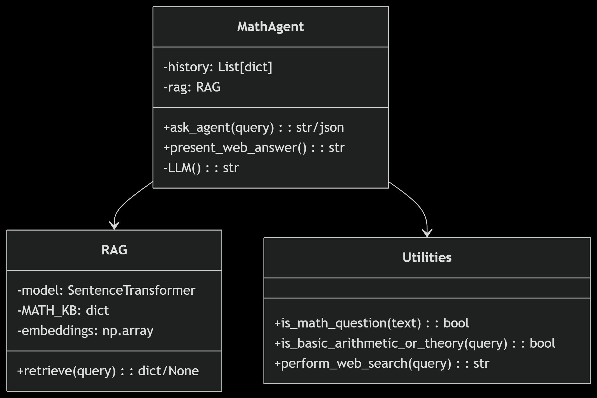
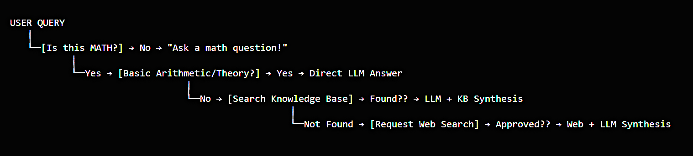

Math-Agent is an agentic mathematics assistant that leverages LLMs, Retrieval-Augmented Generation (RAG), and Web Search to provide step-by-step solutions, explanations, and mathematical concepts. It combines a knowledge base, web search, and feedback loop to deliver accurate and context-aware answers to math queries.
High Level Design (HLD): Shows the overall architecture and data flow between user, web, LLM, RAG, and feedback modules.
Low Level Design (LLD): Details the internal logic, agent orchestration, and tool-calling flow.
Agent Flow: Visualizes the step-by-step process from user query to final answer, including tool invocation and feedback.
GitHub: @akhilbrucelee066
LinkedIn: @pranay-akhil-jeedimalla
Email: jpranayakhil066@gmail.com
Note: I am working to deploy this agent as a full stack application for public use.